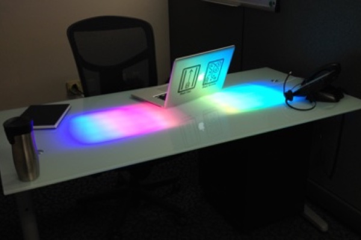
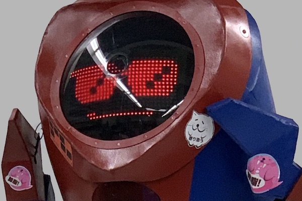
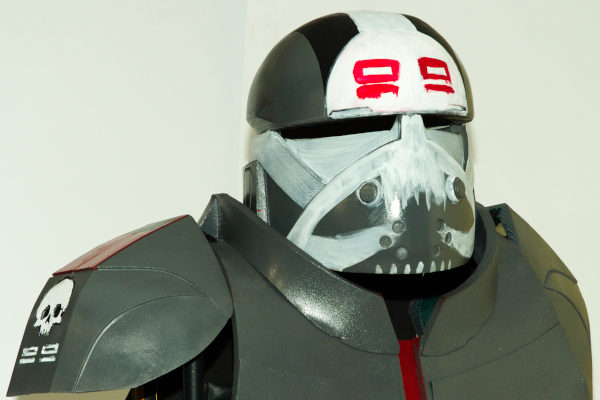

For more than twenty years I have been consistently successful in development, operations, and leadership roles. This multi-faceted experience enables me to form strong professional relationships based on shared experiences and mutual respect.
I communicate well with people of all levels of technical understanding and consistently create positive interdepartmental relationships. Leadership and mentoring come naturally to me and I enjoy building productive teams while supporting individual growth. I am passionate about efficiency and reliability.
Deep in my core, I am passionate about life-long learning and growth. Whether in myself, or others, I love to support personal and professional development. The study of non-IT subjects, such as critical thinking and communication, has provided me with valuable tools to foster positive change. Additionally, I am diligent about removing ego, personal bias, and industry fads from all technical discussions and decisions.
If I can be of assistance to you or your organization, feel free to reach out. I'm available for consulting and speaking engagements in the areas of online retail, IT management, open source software, and more.
With so much of my professional life spent on software and virtualized systems, I find it very satisfying to make physical creations in my spare time. Combining personal manufacturing technologies such as 3D printing and CNC with traditional skills such as woodworking and welding has proven to be effective and empowering. My projects have been featured on Instructables.com, MakeZine.com, and exhibited at multiple Maker Faires.
For more information, feel free to check out my project build logs at
K0DR.com.


